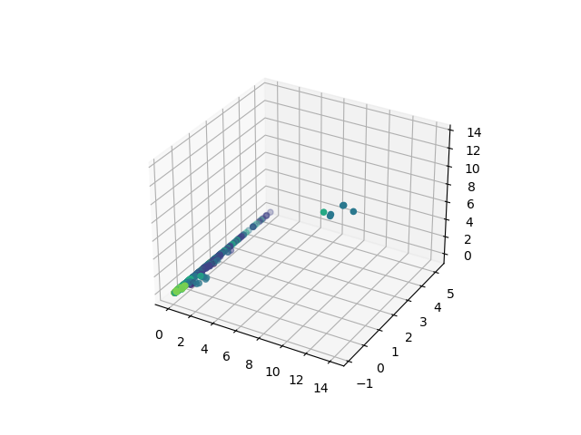
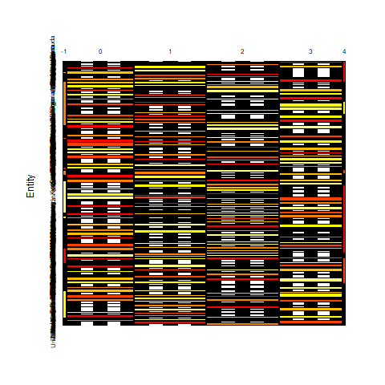

Data prepared for analysis:I obtain label by approximating natural growth rate. I set the label is y. I set other variables to x and normalize them by (x-xmean)/xstd. By normalizing the variables, I can see if a set of measured variables is really measuring the same thing. After the data prepared for analysis, split the whole data to train set (80%) and test set(20%). I use naïve bayes to fit the model predict the test y. |
python:the predict work not very well. The accuracy of the predict is only around 40 percent. train data test data |
R:the predict work well. The accuracy of the predict is only around 80 percent. hist of label naive bayes plot |
Conclusion:Naive Bayes classifier is a collection of classification algorithms based on Bayes' theorem. Overall naive bayes works well in this part. |